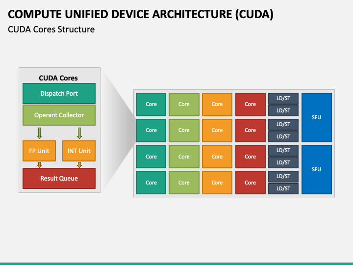
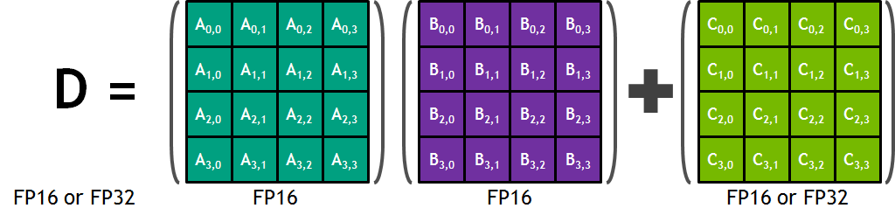

Now that we have an idea and how the GPU "talks" with the rest of the system, learning with what means the GPU renders things should come next. Rendering items is (in most cases) the main purpose of the GPU. One of the reasons it was invented was to accelerate graphics, as integrated CPU graphics were not cutting it for some people. The GPU achieves this with a number of smart innovations that could save you hours of time.
As I stated on the first page, the die of a GPU consists of thousands of cores, like the ones that you can find on a CPU. Both a GPU and a CPU have cores. While a CPU has much less cores than a GPU, these cores are optimized for speed, and being general purpose. These cores have an astonishing amount of complexity, and they clock in at jaw-dropping speeds. A GPU core is still complex, but it is much more simple. They also clock in slower, but have numbers often in the thousands.
There are a few types of GPU core, and they are different from company to company. For Nvidia, there are three different types of GPU core. The first type is the CUDA core, which is used for any type of rendering. It is general purpose, and has amazing parellel computing power. AMD developed Stream Processors in order to compete with CUDA. Tensor cores, which came a fair bit later, were focused on mastery of floating bit integers, and things of that such. Each Tensor cores consists of a 4X4 processing matrix, and requires a lot of knowledge to write code for.
I will be using Nvidia's cores as examples, as AMD does have counterparts, but lacks market share at the moment.
When you take a look at a GPU's specs, you can see that the number of CUDA cores is often one of the highest, if not the highest, numbers on the page. These numbers reflect the significance of CUDA, which can enabling calculations at large scales and high speeds. Contrary to the idea of instructions starting at the "beginning" (the top of the core in the diagram) of the core, instructions in a CUDA core can run concurrently, thanks to the dispatch port, which provides instructions to the core. Moreover, modern GPU architectures leverage mechanisms like instruction pipelining and instruction-level parallelism to overlap instruction execution with data fetching, minimizing idle time. The core then proceeds to fetch necessary input data from memory or registers before executing the command from the dispatch port. Subsequently, the core determines whether to utilize the FPU (floating point unit) or the INTU (integer unit) for processing from the instructions that it recived. Following computation, the core transfers the result to the result queue and awaits new instructions.
Nvidia's Tensor cores are the "steriods" that they give thier GPUs that take artificial intelligence and deep learning to the next level. Unlike the normal cores that are more general purpose, Tensor cores are specialists designed for the high-demand calculations needed in the fields that require immense amount of calculations. Their superpower lies in a technique called mixed precision computation. These cores perform most of the work using a less detailed (but much faster) language, then switching to a more precise one for the final answer. Tensor cores achieve this by seamlessly working with two data formats: FP16, which is like a shorthand version of numbers, and FP32, the full and accurate representation of they work they just finished. This allows for quicker calculations while maintaining overall accuracy. But that's not all. Tensor cores also haver some more drugs called fused multiply-add. This stupidly fancy term means that they can combine two crucial mathematical steps, multiplication and addition, into a single operation. This fusion further accelerates the process compared to performing them separately, and wasting time. By combining these techniques with dedicated hardware within the GPU, Tensor cores become a powerhouse for deep learning, enabling Nvidia GPUs to tackle these complex tasks significantly faster.
When processing lighting effects, for the longest time, it has always been a challenge to create realistic lighting effects. You could almost alwasys tell that a frame was from a game, all because of the lighting. With Ray-Tracing cores (which can be found on AMD GPUs with the same name) the dedicated processors found in Nvidia's RTX GPUs that act like tiny light simulators in any required scenario. Unlike traditional rendering methods that rely on approximations, Ray-Tracing cores mimic the way light actually travels in the real world. They fire virtual rays of light from the viewpoint, which is the POV/camera, into the scene, simulating how they bounce off objects, cast shadows, and illuminate different areas, and eventually dull out. This long process allows for incredibly realistic lighting effects, from lifelike reflections on shiny surfaces to subtle changes in shadows depending on the scene's look. However, these simulations are computationally expensive, and take forever to do. Your average general-purpose CUDA core would not be able to render these scenes fast enough to play a game. This is where that dedicated hardware comes in. Although Ray-Traced games run with lower framerates, they are still an improvement over running the Ray-Traced game on just CUDA cores.